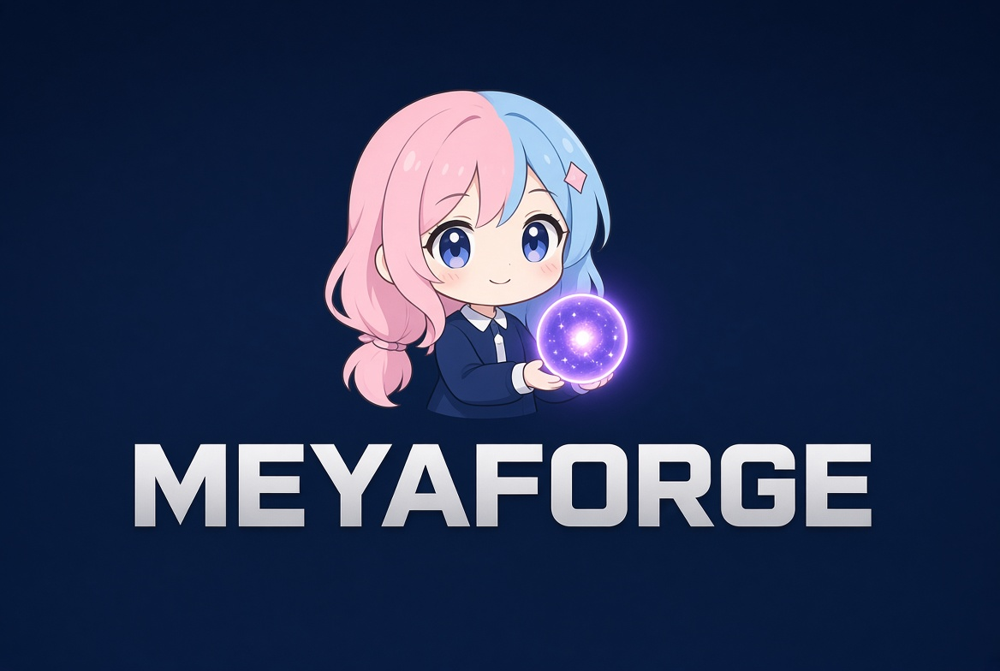

📁
Проекты
Управление рабочими пространствами прошивок.

Проверяем обновления на GitHub…
Кухня для модификации, портирования и сборки Android-прошивок.
Управление рабочими пространствами прошивок.
Режимы ADB/Fastboot, разделы, build.prop, fstab.
Определение super, sparse, ext4, erofs и их разборка.
Дерево разделов, просмотр, редактирование и синтаксис.
Патчинг kernel, ramdisk, boot.img и Smali модификации APK.
MagiskBoot, Apktool, Uber-Signer, JADX, erofs-utils и др.
Упаковка и формирование flashable zip образов.
Сравнение прошивок, перенос ядра, fstab и HAL модулей.
Рабочие пространства с изолированными разделами, конфигами и исходниками
Выберите существующий проект во вкладке «Проекты» или создайте новый, чтобы приступить к работе с образами.
| Раздел | Тип (ФС) | Размер | Статус разборки | Действия |
|---|
Глубокий анализ устройства в режимах Android OS, Recovery, Sideload, Fastboot и FastbootD
Пожалуйста, подождите, считываются свойства getprop, точки монтирования, таблицы fstab и fastboot variables.
Подключите телефон по USB с включенной отладкой по USB (ADB) или переведите в режим Fastboot / Recovery, затем нажмите «Просканировать устройство».
| Раздел / Точка монтирования | Файловая система | Размер | Блочное устройство |
|---|
| Ключ | Значение |
|---|
| Ключ | Значение |
|---|
| Переменная (getvar) | Значение Bootloader |
|---|
Конфигурация fstab не найдена.
Выберите тип лога выше для отображения.
Быстрый доступ к разборке загрузочных ядер (MagiskBoot) и Smali декомпиляции/сборке APK (Apktool)
Внешние бинарники для работы с прошивками. Скачиваются и обновляются напрямую с GitHub Releases в один клик
Навигация по структуре проекта, просмотр и редактирование файлов с подсветкой синтаксиса
Поддерживается редактирование текстовых файлов (build.prop, fstab, .rc, .xml, .sh, .json), предпросмотр изображений и анализ бинарных файлов.
Этот файл является бинарным (скомпилированным) и не может быть отредактирован как текст.
Сборка разделов из extracted/ (EROFS/EXT4/Boot), упаковка super.img через lpmake и генерация Fastboot ROM пакетов
Выберите разделы из images/ для включения в таблицу динамических разделов:
super.img, boot.img, vbmeta.img, а также кроссплатформенные скрипты flash_all.bat (Windows) и flash_all.sh (Linux/macOS) с автоотключением AVB/dm-verity.
Сравнение стоковой базы и донора, анализ совместимости Android / VNDK, автоматический перенос ядра, fstab и HAL драйверов
База (Сток) — родная прошивка вашего устройства, откуда будут взяты ядро, fstab и аппаратные библиотеки.
Порт (Донор) — прошивка с другого устройства (HyperOS, Pixel, OneUI), чей интерфейс и системные разделы переносятся.
| Категория | Библиотека | База | Порт |
|---|
Эти данные подставляются в релизы прошивок.
/meyakitchen apply <триггер>all — все уведомления программыbuild — живой прогресс и завершение сборкиrelease — релизы и готовые прошивкиimport — разборка и распаковка образовdevice — слепки диагностированных устройств/meyakitchen status — статус привязки чата/meyakitchen remove — отвязать чат от кухни
| Чат / Канал | Chat ID | Тип | Назначенные триггеры | Действия |
|---|---|---|---|---|
Нет привязанных каналов. Напишите /meyakitchen apply all в вашем канале или группе. | ||||
Проверка…
—
Во время сбора комплексной информации и снятия системных логов устройство может кратковременно зависнуть, войти в режим опроса шин или автоматически перезагрузиться.
Не отключайте кабель USB и не нажимайте кнопки на телефоне до окончания операции!
Выберите тип системного журнала для извлечения через ADB:
Файл: —
Выберите, как обработать найденные разделы и что делать с промежуточными файлами:
Введите относительный путь или имя внутри выбранного проекта:
Введите новое имя или путь для объекта: